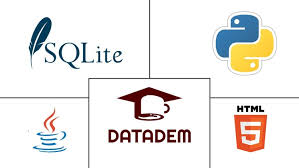
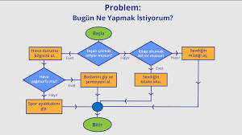
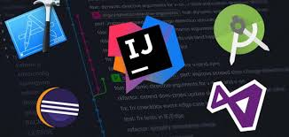

Programlama Dillerine Giriş

Yazılım geliştirme sürecinin temelini programlama dilleri oluşturur.
Bu diller, bilgisayarların anlayabileceği talimatları yazmamızı
sağlar. Yeni başlayanlar için en popüler ve öğrenmesi kolay diller
arasında Python, JavaScript ve Ruby bulunur. Bu diller, geniş topluluk
desteği ve bol miktarda kaynak sunarak öğrenme sürecini daha
erişilebilir hale getirir.
Populer Programlama Dilleri
- C#
- Python
- Java
- JavaScript
- PHP
Kaynak:
Yazılıma Nereden Başlanır? | Coderspace Blog
Algoritma ve Veri Yapılarının Önemi

Algoritmalar ve veri yapıları, yazılımın bel kemiğini oluşturur.
Algoritmalar, belirli bir problemi çözmek için izlenen adımlar
dizisiyken, veri yapıları verilerin düzenlenme ve depolanma
biçimlerini tanımlar. Bu kavramları anlamak, daha verimli ve etkili
kod yazmanıza yardımcı olur.
Temel Algoritma ve Veri Yapıları:
- Sıralama Algoritmaları
- Arama Algoritmaları
- Bağlı Listeler
- Ağaç Yapıları
Kaynak:
Yazılım Geliştirmeye ve Programlamaya Yeni Başlayanlar için
Tavsiyeler
Geliştirme Ortamları ve Araçları

Doğru geliştirme ortamı ve araçları seçmek, yazılım geliştirme
sürecini daha verimli hale getirir. Entegre Geliştirme Ortamları
(IDE'ler), kod yazma, hata ayıklama ve test etme gibi işlemleri tek
bir platformda sunarak geliştiricilere büyük kolaylık sağlar. Yeni
başlayanlar için kullanıcı dostu ve ücretsiz IDE'ler mevcuttur.
Popüler Geliştirme Araçları:
- Visual Studio Code
- Sublime Text
- PyCharm
- Atom
Kaynak:
Yazılıma Nereden Başlanır? | Coderspace Blog
Proje Tabanlı Öğrenme ve Topluluk Katılımı
Teorik bilgileri pratiğe dökmenin en iyi yolu, küçük projeler
geliştirmektir. Bu projeler, öğrendiklerinizi uygulamanıza ve gerçek
dünya deneyimi kazanmanıza yardımcı olur. Ayrıca, yazılım
topluluklarına katılarak diğer geliştiricilerle etkileşimde
bulunabilir, bilgi alışverişi yapabilir ve mentorluk desteği
alabilirsiniz.
Başlangıç Seviyesi Proje Önerileri:
- Kelime Sayar Uygulaması
- Kredi Kartı Numarası Doğrulama
- Captcha Oluşturucu
- Adam Asmaca Oyunu
Kaynaklar:
Kaynak#1
Kaynak#2
Kaynak#3
Görsel#1
Görsel#2
Görsel#3
Görsel#4